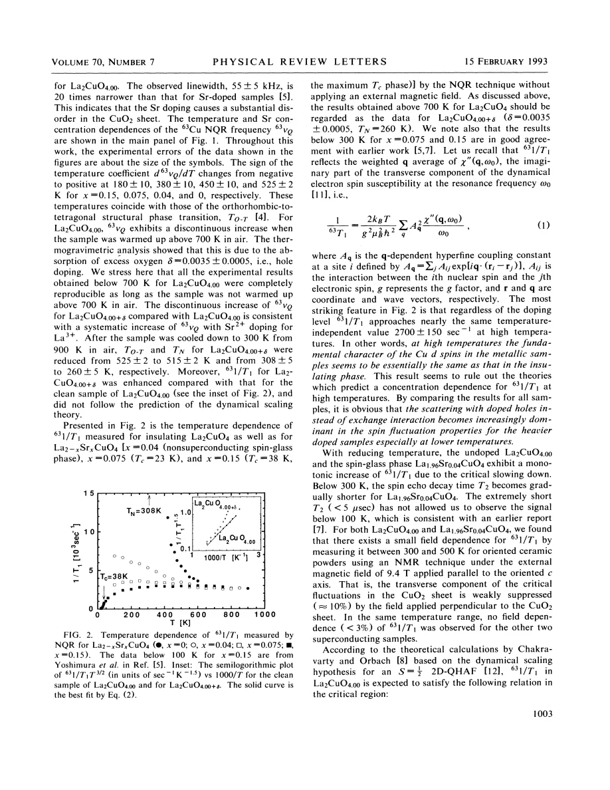
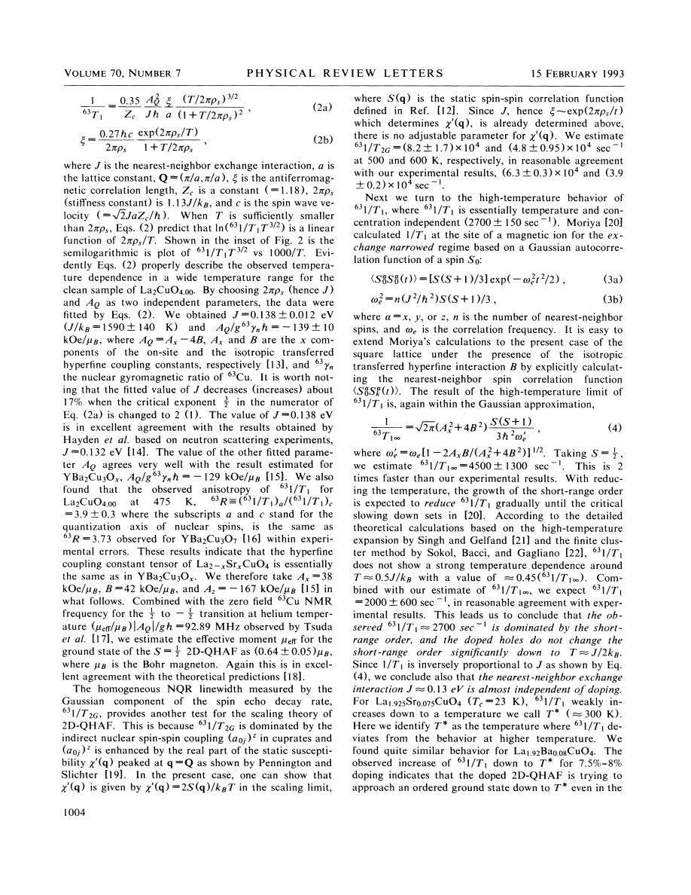

experiment · Imai · supplied source 1993
Low Frequency Spin Dynamics in Undoped and Sr-Doped La2CuO4
At high temperature Cu relaxation converges across dopings, while lower-temperature behavior distinguishes the parent antiferromagnet from superconducting LSCO.
The question: How much of the parent local-spin dynamics survives after holes are added?
Before you start: the few terms you need
- LSCO: layered La2-xSrxCuO4; nominal x is Sr per formula unit
- Local probe: a distribution can matter even when the bulk average barely changes
See → explain → test
Understand it in four pictures.
Picture 1 / 4
Start with the parent
Look for: A Cu spin is linked to its nearest neighbors by a strong exchange interaction.
Swipe across the picture to read every label, or enlarge it below.
- Cu spins
- Exchange J
Teaching schematic. Alternating arrows are a teaching picture of AF correlations; the measured regime is paramagnetic.
The source tests a spin-one-half two-dimensional Heisenberg baseline.
Picture 2 / 4
Compare high-T rates
Look for: Very different low-temperature phases approach a similar high-temperature rate.
Swipe across the picture to read every label, or enlarge it below.
- Undoped
- x = 0.075
- x = 0.15
Teaching schematic. Reported common scale about 2700±150 s^-1; panels are not data.
Similar 1/T1 supports preserved short-range spin physics, not identical ground states.
Picture 3 / 4
Cool the correlations
Look for: The clean parent develops a rapidly growing correlation length.
Swipe across the picture to read every label, or enlarge it below.
- Cooling
- Growing ξ
- Faster nuclear relaxation
Teaching schematic. Nuclear relaxation grows as electronic fluctuations slow within the accessible regime; monotonicity is not universal for every frequency.
Its rate supports a Heisenberg dynamical-scaling fit.
Check the original: PDF p. 3
Picture 4 / 4
Track the crossover
Look for: At x = 0.15 the rate begins falling around 300 K and drops at Tc.
Swipe across the picture to read every label, or enlarge it below.
- Rate suppression
- Localized-to-itinerant interpretation
- Pairing-linked reduction
Teaching schematic. Interpretation of supplied1993 work; no unique pairing mechanism is established.
The source interprets a crossover toward itinerant spin behavior before pairing.
Predict before revealing
Does a common high-temperature 1/T1 imply the same ground state at all dopings?
Choose an answer, then compare the reasoning.
The low-temperature phases and rate trends differ strongly. The common high-T scale is interpreted as preserved short-distance exchange physics.
Read the answer
No; it constrains short-range high-T dynamics The low-temperature phases and rate trends differ strongly. The common high-T scale is interpreted as preserved short-distance exchange physics.
Go deeper Follow the full argument
The experimental advance
Imai and colleagues report Cu NQR and NMR in the paramagnetic state of undoped and Sr-doped La2CuO4 up to 900 K. Accessing the parent above its Néel transition is difficult: electronic fluctuations shorten echo lifetimes and high temperature weakens nuclear polarization. This work compares x = 0, 0.04, 0.075 and 0.15, spanning insulating and superconducting phases. The purpose is to test the two-dimensional spin-one-half Heisenberg description of the parent and then determine what doping changes. NQR is performed without applied field, while aligned-powder NMR provides orientation-dependent checks. The parent result supplies a physical reference for interpreting the much more complex doped systems.
Oxygen chemistry is part of the measurement
The clean parent is prepared by nitrogen annealing and has a Néel temperature near 308 K. Heating it above roughly 700 K in air introduces a small excess oxygen concentration, measured near δ = 0.0035. That tiny chemical change shifts NQR frequency and lowers the subsequent magnetic and structural transition temperatures. Its relaxation no longer follows the same clean-parent scaling. The authors therefore distinguish data before and after oxygen uptake, and emphasize reproducibility below the altered conditions. A high-temperature continuation of a curve cannot safely be treated as the same material if its oxygen stoichiometry changed during the run. Later sealed-sample work makes this control especially clear.
What 1/T1 measures and the high-temperature comparison
The Cu nuclear spin-lattice rate is a weighted momentum sum of the imaginary electronic susceptibility at the nuclear frequency. It is sensitive to low-frequency magnetic fluctuations through the hyperfine form factor, rather than a direct measure of the full excitation energy spectrum. All four dopings approach approximately 2700 ±150 inverse seconds at elevated temperatures. Comparing with exchange-narrowed and numerical Heisenberg calculations, the authors infer that short-range spin correlations and a nearest-neighbor exchange near 0.13 eV are not strongly destroyed by doping at these temperatures. This is a short-distance, high-temperature statement. It does not imply that correlation length, spin stiffness, or the low-temperature ground state remain doping independent.
Parent scaling and the role of an independent check
For the clean parent, cooling increases 1/T1 dramatically. A dynamical-scaling expression links it to the correlation length ξ, which grows approximately exponentially with inverse temperature in the renormalized-classical regime. Fitting gives J = 0.138 ±0.012 eV and an effective hyperfine combination consistent with other cuprate estimates. The source also checks orientation anisotropy and Gaussian transverse relaxation, the latter probing indirect nuclear coupling and static susceptibility near the AF wave vector. Agreement with neutron-derived J and plausible transverse rates strengthens the interpretation. The fitted J depends on the assumed scaling power, explicitly demonstrating that parameter agreement should be read within the model rather than as a model-free measurement.
Doped cooling and interpretation
The x = 0.04 rate grows on cooling until the echoes become too short to observe at low temperature. The x = 0.075 curve first rises weakly then turns down around 300 K. The x = 0.15 curve is nearly flat above that scale and falls below it; its relaxation then drops sharply when superconductivity begins. The authors interpret this sequence as local-moment-like high-temperature spin dynamics crossing gradually toward a more itinerant regime before pairing. The drop at Tc shows that the spin degrees of freedom measured by Cu relaxation respond to superconductivity; it does not independently establish the force binding Cooper pairs. Keep the inaccessible fast-relaxing signal and the visible selected nuclei distinct when reading low-temperature rates.
How to compare the evidence
The high-temperature comparison separates local exchange from long-distance order. Hole doping rapidly destroys the parent Néel state, but a similar Cu relaxation scale at sufficiently high temperature is compatible with surviving short-range antiferromagnetic interactions. A lower ordering temperature therefore need not mean a proportionally smaller nearest-neighbor J. The parent scaling estimate is checked against independent magnetic information and its fitted hyperfine combination, while the uncertainty in the scaling assumption remains explicit. Chemistry provides an equally important control: the small oxygen uptake in an unsealed heated parent alters its low-temperature behavior, so the apparent intrinsic curve can change after thermal cycling. Comparing sealed or carefully tracked specimens matters before assigning those differences to an electronic crossover. The superconducting drop is another response, not a direct pairing-mechanism measurement.
Translate the mathematics Key equations and symbol meanings
1/T1 ∝ T Σq |A(q)|² χ″(q,ω0)/ω0
Symbols: A(q): hyperfine filter; χ″: dissipative spin susceptibility; ω0: nuclear frequency; q: wave vector.
A low-frequency weighted sum; it does not separately resolve every momentum or determine a pairing interaction.
ξ ∝ exp(2πρs/T) ; 1/T1 ∝ T^(3/2) ξ
Symbols: ρs: spin stiffness expressed in temperature units; ξ: AF correlation length.
Leading scaling behavior used for the clean parent in its valid regime; the source uses fuller prefactors.
Read the evidence A guided look at the original figures

Open the full original page ↗

Open the full original page ↗
What this paper does—and does not—establish
- Full four-page scan read visually.
- Above700 K the parent heated in air changes oxygen stoichiometry.
- Localized-to-itinerant language is the authors' historical interpretation.
Explain it back.
Try answering aloud before opening the explanation.
Why track oxygen uptake?
Very small excess oxygen changes the parent relaxation and transition temperatures.
What does T2 signal loss mean?
Some nuclei become unobservable because the echo decays before detection.
Does the Tc rate drop prove spin-mediated pairing?
It establishes a coupling to superconductivity, not a unique pairing mechanism.
Connect the next paper.
Source version, reading coverage and preservation
Complete scanned source read visually at full page size, including main equations and figures
Reviewed body pages: 1, 2, 3, 4. References checked as a bibliography but cited works were not independently re-read.
Original file retained byte for byte. SHA-256: 0889e110e117318c4f0c6a8397feec95a558a8030a92de683ac38cee4d96b647
Filename: PRL - Imai - Low frequency spin dynamics in undoped and Sr-doped La2CuO4 - 1993.pdf.